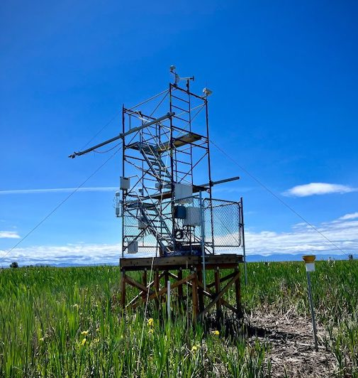

| Assignment 1 | Assignment 2 | Assignment 3 |
|---|
Syllabus
GEOG 321: Winter 2025
How do feedbacks between ecosystems and the atmosphere influence microclimates and the global climate system? In this course we’ll focus on the interactions between the surface, vegetation and atmosphere, and the physical processes governing the transfer of heat, mass and momentum. Through this course you’ll also be exposed to the basic instrumentation and methods used in today’s monitoring and modeling of microscale climate and surface-atmosphere exchange. While this course examines the behaviour of the atmosphere close to the surface, what we cover in this class implications for processes occurring at the scale of a single leaf to the entire planet!

Learning Outcomes
By the end of the course you should be able to:
- explain how the surface radiation and energy budget affects the surface climate.
- describe important surface characteristics that affect surface radiation and energy budgets and surface microclimates.
- understand the basics of turbulence, dispersion and local wind systems in the atmospheric boundary layer and how they are controlled by surface processes.
- provide examples of key physical, biological and chemical processes that control trace gas, water and energy fluxes between the land surface and the atmosphere.
- provide examples of how surface-atmosphere interactions respond to environmental change, and how this can create climate feedbacks.
- know the principles of basic instrumentation, methods and data-analysis (including the use of the R programming language) used for today’s monitoring and modelling of weather and climate in the atmospheric boundary layer.
- analyze and interpret data from measurement systems that are used to monitor near-surface climate and surface radiation, energy, and greenhouse gas balances.
- explain how the principles of micrometeorology have practical applications to society.
Your Instructor
Dr. Sara Knox
Pronouns: She/Her/Hers
Email: sara.knox@mcgill.ca
Office Hours: Mondays 10:00-11:00 in BH 619. Alternative times available by appointment
Bio: I am an Assistant Professor in the Department of Geography. Prior to that I was an Assistant Professor in the Department of Geography at UBC between Jan 2019 & June 2023. I received my BSc in Earth System Science from McGill in 2009, and my PhD in Environmental Science from UC Berkeley in 2019. I am broadly interested in the impacts of climate variability and land-use change on land-atmosphere exchanges of water, energy, and trace gases. I also seek to understand how ecosystem responses to global change can feedback to slow or accelerate future climate change. My research and training is in micrometeorology, hydrology, and ecosystem ecology. I focus on biosphere-atmosphere interactions in a variety of climates and ecosystems.
TAs and TA office hours
Your TA for the class is Camille Jones (camille.jones@mail.mcgill.ca).
Camille will hold two office hours per assignment to assist you with each assignment. The office hours are:
Instructional methods
The course consists of two 80-minute lectures each week and one lab visits covering 32 topics, directed readings, assignments, study questions, a midterm during the semester and a final during the exam period.
Lectures will be held in-person. Lectures will also be recorded and can be made available upon request. Note that if you do not attend lecture, you will not receive participation marks for that day, however, each student can miss up to three lectures without it impacting their participation grade. If you miss a lecture due to medical or other reasons, please reach out to me, and I can provide you with a recording of the lecture. If you miss more than 3 lectures, contact me regarding your absences and we can assess potential accommodations.
Communication Guidelines
Announcements
New announcements will be posted regularly to keep you informed of logistics and any important course updates. Please make sure to check frequently.
While I encourage you to post course content related questions in the Discussion Forums (see below), for private communication, use email. Please put the course ID {GEOG 321} on the subject line. Emails are typically answered within 24-48 hours during regular business hours (M-F 9am-5pm). When addressing me in your email, you can refer to me as either Sara, Dr. Knox or Prof. Knox. Remember that email is a formal and public method of communication. Do not write anything that you do not want on the permanent, public record.
Course Logistics Q & A Forum
Use this forum to ask logistical questions about the course or report any problems you encounter. Your classmates may have the same question. Students are encouraged to respond to questions and help each other!
The TAs and I will check this Forum every few days.
Other Discussion Forums
Discussion Forums are available for any questions related to assignments and study questions as well as the lecture material. As noted above, your classmates may have the same question. Students are encouraged to respond to questions and help each other!
Required course materials
The readings are posted on the course website. They consist of draft chapters from the textbook ‘Boundary Layer Climates’ by T. R. Oke and a few other sources.
Course content
| Week | Date | Description | Course materials | Assignments |
|---|---|---|---|---|
| 1 | 06-Jan | 1 Introduction and course overview | Reading Package Lectures 1-2 | |
| 08-Jan | 2 Energy and mass balances 3 Surface energy balance |
Reading Package Lectures 1-2 Reading Package Lecture 3 |
||
| 2 | 13-Jan | 4 Radiation geometry and ‘sun-paths’ | Reading Package Lectures 4-5 | Study Questions - Topic 4 (due Jan 27) |
| 15-Jan | Tutorial: Intro to R | |||
| 3 | 20-Jan | 5 Short-wave radiative transfer 6 Short-wave reflection and albedo (intro.) |
Reading Package Lectures 4-5 Reading Package Lecture 6 |
Study Questions - Topic 5 (due Jan 27) |
| 22-Jan | 6 Short-wave reflection and albedo (cont.) 7 Long-wave radiation and emissivity |
Assignment 1 handed out | ||
| 4 | 27-Jan | 8 Net all-wave radiation 9 Virtual field site visit (Radiation instrumentation) |
Reading Package Lecture 9 | |
| 29-Jan | 10 Soil thermal properties 11 Soil heat transfer (intro.) |
Reading Package Lectures 10-12 | Study Questions - Topic 10 (due Feb 05) | |
| 5 | 03-Feb | 11 Soil heat transfer (cont.) 12 Modelling sub-surface temperatures |
Reading Package Lectures 10-12 | Study Questions - Topic 11 (due Feb 10) Study Questions - Topic 12 (due Feb 12) |
| 05-Feb | 13 Radiation and heat transfer in water, snow and ice 14 Radiation in complex terrain |
Reading Package Lecture 13 & 14 | ||
| 6 | 10-Feb | 15 Laminar and turbulent flow 16 Production of atmospheric turbulence (intro.) |
Reading Package Lecture 15 Reading Package Lectures 16-17 |
|
| 12-Feb | 16 Production of atmospheric turbulence (cont.) 17 Dissipation of atmospheric turbulence |
Reading Package Lectures 16-17 | Assignment 1 due | |
| 8 | 17-Feb | 18 Turbulence statistically approached | Reading Package Lecture 18 | Assignment 2 handed out Study Questions - Topic 18 (due Feb 26) |
| 19-Feb | 19 Momentum transfer | Reading Package Lectures 19-20 | ||
| 9 | 24-Feb | Midterm review | Reading Package Lectures 19-20 | |
| 26-Feb | Midterm Examination | |||
| 03-Mar | Winter Reading Break | |||
| 05-Mar | Winter Reading Break | |||
| 10 | 10-Mar | 20 Velocity profile laws | Reading Package Lectures 19-20 | |
| 12-Mar | 21 Flux-gradient relations | Reading Package Lectures 21-26 | Study Questions - Topic 21 (due Mar 19) | |
| 11 | 17-Mar | 22 Eddy covariance 23 Dynamic stability (intro.) |
Reading Package Lectures 21-26 | Study Questions - Topic 22 (due Mar 24) |
| 19-Mar | 23 Dynamic stability (cont.) 24 Turbulent exchange in non-neutral situations |
Reading Package Lectures 21-26 | Study Questions - Topic 23 (due Mar 26) | |
| 12 | 24-Mar | 25 Lab visit (Eddy covariance system, trace gas measurements) | Reading Package Lectures 21-26 | Assignment 2 due |
| 26-Mar | 26 Convective and stable boundary layers 27 Surface heterogeneity and advection |
Reading Package Lectures 21-26 Reading Package Lecture 27 |
||
| 13 | 31-Mar | 28 Flow in complex terrain 29 The water cycle at land-atmosphere interfaces |
Reading Package Lecture 28 Reading Package Lectures 29-31 |
Assignment 3 handed out |
| 02-Apr | 30 Plant-atmosphere interactions 31 Measuring and modeling evapotranspiration |
Reading Package Lectures 29-31 | ||
| 14 | 07-Apr | 32 Land atmosphere interactions in a changing global climate | Reading Package Lectures 29-31 | |
| 09-Apr | Final class: Review/evaluation/exam instructions | Assignment 3 due |
Evaluation
| Participation | 4% |
| Self-study questions | 4% |
| Written assignments 3) | 42% |
| Mid-term exam | 20% |
| Final exam | 30% |
You will receive Participation marks for answering Slido questions during lectures. Note that you do not need to have the correct answer to receive full marks, you just need to submit an answer to the questions during the lecture. You are also strongly encouraged to engage in all discussion questions on Slido.
Assignments will be handed on myCourses on the due date. All assignments are required to be labelled with course number, student number, student name and assignment number. Late assignments will be penalized 10% of the actual marks achieved for each (partial) day past 11:59 pm on the due date. Late assignments will not be accepted once graded assignments have been returned to the class (which results in a grade of 0%). Note that you are not required to use R (or other programming languages) for assignments, however, it is encouraged, and I will provide support and resources to help you with that (see Coding resources on the course website). Each assignment is worth 14% of your final grade.
Collaboration on homework is encouraged. However, you should think about the problems yourself before discussing them with others. Also, write-ups must be done independently. (In practice, this means that it is OK for other people to explain their solutions to you, but you must not be looking at other people’s solutions as you write your own.)
Self-study questions questions are assigned regularly throughout the semester (9 in total). These are a great opportunity for you to apply some of the concepts covered in class and will help prepare you for assignments and exams. It is also a helpful way for you to learn R if that is of interest to you. Note that while solutions to the self-study questions are available to you, you are required to upload your own answers to these questions on myCourses (either as a word document, pdf, or html file). To help you keep up with the course material, you will have a week to upload your answers to myCourses (note that they are due at 11:59pm ET on that day). You only need to complete 7/9 to receive full marks for the self-study questions (4% of your total grade). Note that late study questions will receive a grade of zero. All self-study questions and their due dates are already posted under Assignments.
The mid-term exam will be a closed-book, in-person exam on Wednesday, February 29th during class. More details on the mid-term exam can be found on the course website
The final exam will be held during the final exam period. It will also be a closed-book, in-person exam. The duration of the final is 3 hours (180 minutes). Additional details on the final exam will be posted on the course website.
Note: Illness and extenuating circumstances can happen and may be legitimate reasons for extensions on assignments or postponement of exams. If there are reasons you are unable to meet a deadline be sure to discuss with me well in advance if possible. You must be prepared to provide confirmation of illness.
Academic integrity
McGill University values academic integrity. Therefore, all students must understand the meaning and consequences of cheating, plagiarism and other academic offences under the Code of Student Conduct and Disciplinary Procedures” (Approved by Senate on 29 January 2003) (See McGill’s guide to academic honesty for more information).
Other statements
Please see the full course syllabus.
Strategies for Success
Be proactive!
- Keep track of deadlines & note the late submission policies
- Timely communication is important! If you have an issue, please bring it to my attention.
- Partial credit is better than no credit. If you can’t finish a lab before the deadline - just submit what you’ve got done already.
- Drop by office hours & ask questions!